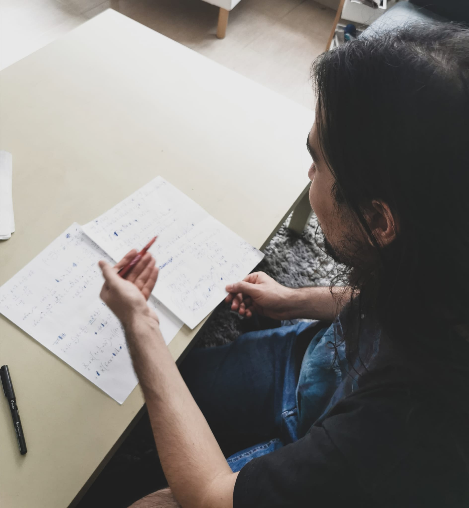
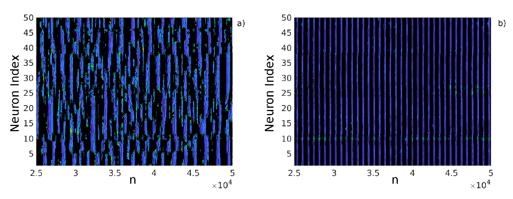

RLC
Roberto Lozano Cardoso

Physics Teacher
Game Designer
Mathmatician
Musician
Student
Gamer
Bio
I am a researcher in the Nonlinear Dynamics, Chaos and Complex Systems Group at Universidad Rey Juan Carlos (Madrid, Spain). I’m also a Lecturer in the Department of Physics, where I teach undergraduate level courses.
My main research interests are nonlinear dynamics, chaos theory and modeling and simulation of complex systems applied to biological or economical topics. Also I am interested in linear algebra, numerical analysis and computer graphics.
I published a paper about the control of sinchronization of biological neurons network using spectral methods (Lozano et al, 2019) with Javier Used and Miguel A.F. Sanjuán and we are working in a second one.

I studied a Master's Degree in Mathematical Engineering in Universidad Carlos III (Madrid, Spain) where I read my Master's Thesis implementing and analysing a numerical method using word-series averaging. I was directed by JM Sanz-Serna.
Now I am a student of Computer Graphics, Virtual Reality and Video Games Master Degree in Universidad Rey Juan Carlos. Here I developed a game: A.L.F.I.E.'s Game with RAAR. I will also share more interesting project I made in this master with you later ;).
Skills
- Matlab
- OpenGL
- LateX
- CUDA
- Spanish
- C++
- C
- Linux
- Windows
- English
Interests
I am a gamer. I like 4X games like Stellaris, Crusader Kings, Europa Universalis, Victoria, Imperator, Heart of Iron (Paradox Interactive, you can hire me whenever you want), Civilization or Total War; city builder like Tropico, Frostpunk, SimCity or Zeus: Master of Olympus; action role-playing like The Elder Scroll, Mount & Blade or Darkest Dungeon; or simulator like Patrician or Port Royale.
I am a musician. I play the guitar, the piano, the oboe and the recorder. Also I like to compose postmetal music. I like metal, as you could see, and bands like Tool, Metallica, NIN, Rammstein, RATM, El Altar del Holocausto, Toundra, Mafalda, La Raíz, Hora Zulú or Ketekalles.
Contact
Email: Roberto Lozano Cardoso